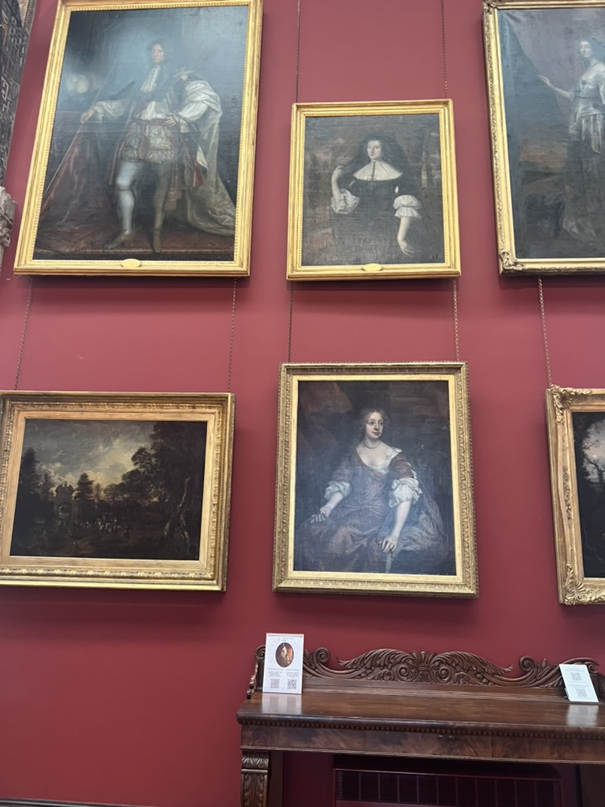

This room is one of the many rooms that can be found in the castle.This is one of the QR codes that allows you to learn more about the room in greater depth.lThis is a view from inside one of the castle's rooms, providing a glimpse of the park outside, where you can relax and enjoy the sunshine.This stand displays more information for people to read about the room.

This is the portrait room where numerous paintings are exhibited, portraying family members from previous generations.. If you're able, keep an eye on this hand painting around the portrait room.This is the castle entrance where you scan your ticket and wait for instructions regarding the rules.This video displays one of the rooms in the castle.
Kilkenny
Places to visit
It's worth the 1-hour and 32-minute drive from the city of Dublin, or roughly 3 hours by bus. It's a perfect day trip to see this scenic place, a free national park. This city is a beautiful tour and shops perfect place to explore the medieval city and more
Castle
However, be prepared for the slight inconvenience of scanning the QR code for each room, which can become a tedious task. Despite this, the wealth of knowledge gained from these digital guides makes it well worth the effort.
After touring the castle, take some time to stroll through the beautiful parks surrounding it. These lush green spaces offer a tranquil retreat from the bustle of urban life and provide the perfect backdrop for a leisurely picnic or a relaxing afternoon stroll.
Explore the city
Don't forget to visit the nearby craft shops and artisanal markets, where you can purchase authentic Irish souvenirs to commemorate your trip. Whether it's handcrafted pottery, traditional woolens, or artisanal cheeses, you'll find a treasure trove of unique gifts to take home with you Outside near the castle, there are a couple of options like food trucks and ice cream. There are other restaurants nearby.Visit Castle website